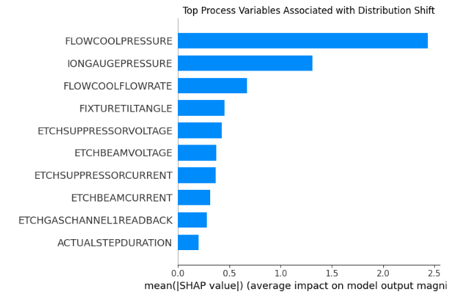
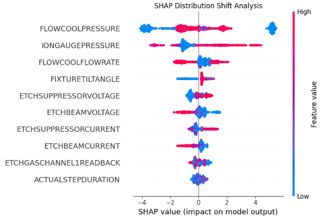
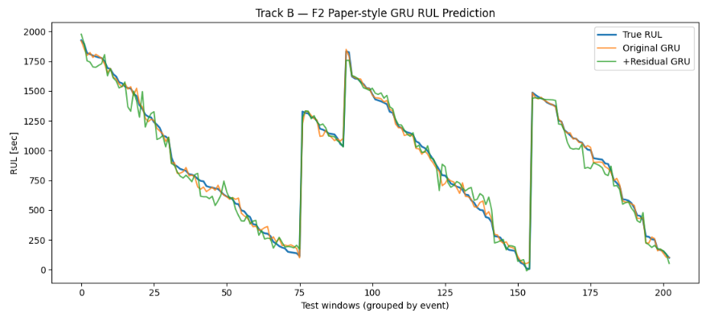
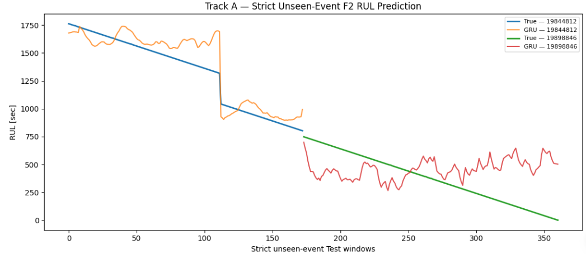

00 · START
처음에는 고장을 조금이라도 미리 맞혀보고 싶었다.
PHM Society 2018 Data Challenge의 Ion Mill Etch 설비 데이터를 사용했다. 데이터에는 공정 중 측정된 여러 상태변수와 고장까지 남은 시간(TTF)이 포함되어 있다. 센서의 물리 단위는 공개 데이터에서 익명화되어 있어, 값의 크기 자체를 물리량으로 해석하지 않았다.
처음부터 하나의 방법을 정해둔 것은 아니었다. XGBoost로 조기예측을 시도했고, 결과가 생각보다 약하자 시간에 따른 데이터 분포를 확인했다. 이후 선행연구의 RUL 예측 방법을 따라가 봤고, 그 과정에서는 반대로 너무 좋아 보이는 결과가 나왔다.
마지막에는 모델보다 평가 방법을 먼저 고정했다. 같은 고장 사례가 학습과 시험에 동시에 들어가지 않도록 나눈 뒤, 완전히 다른 미래 고장에서도 RUL을 예측할 수 있는지 다시 확인했다.
01 · FIRST DIRECTION
F3 고장을 30분 전에 예측해보기
처음 대상으로 잡은 고장은 FlowCool Pressure Dropped Below Limit였다. 현재 센서 상태를 보고 일정 시간 안에 해당 고장이 발생할지를 분류하는 문제로 시작했다.
센서값만 보던 모델에서 temporal feature까지
처음에는 현재 센서값만 XGBoost에 넣었다. 이후 rolling, lag, derivative 같은 시간 이력 feature를 추가했다. 기본 모델의 Validation PR-AUC는 0.01319였고, temporal feature를 추가한 뒤 0.01663까지 올라갔다.
| Class weight | Validation PR-AUC |
|---|---|
| No weight | 0.01663 |
| Sqrt weight | 0.01402 |
| Full weight | 0.01214 |
불균형 데이터라고 해서 positive class에 큰 weight를 주는 것이 항상 도움이 되지는 않았다. 이후 실험에서는 Validation에서 가장 나았던 no-weight 설정을 유지했다.
10분, 15분, 30분 중 어디를 볼 것인가
| Prediction horizon | Validation PR-AUC | Random baseline 대비 |
|---|---|---|
| 10 min | 0.00385 | 2.39× |
| 15 min | 0.00511 | 1.91× |
| 30 min | 0.01798 | 2.08× |
10분 예측은 random baseline에 대한 상대적인 lift가 컸지만 양성 표본 자체가 적고 절대 PR-AUC도 낮았다. 세 후보 가운데 Validation PR-AUC가 가장 높았던 30분을 이후 분석 범위로 고정했다. Test 결과를 본 뒤 horizon을 다시 바꾸지는 않았다.
공정 context를 같이 넣어보기
센서와 temporal feature만으로 충분한지 보기 위해 stage,
recipe, recipe_step을 categorical feature로 추가했다.
Test는 아직 사용하지 않은 상태에서 세 조합을 비교했다.
| 입력 | Validation PR-AUC | Random baseline 대비 |
|---|---|---|
| Context only | 0.00942 | 1.09× |
| Sensor + Temporal | 0.01798 | 2.08× |
| Sensor + Temporal + Context | 0.02185 | 2.52× |
처음으로 Test를 열어본 결과
Threshold도 Test에서 맞추지 않고 Validation에서 F1이 가장 높도록 먼저 정했다. 고정된 모델과 threshold를 Test에 한 번 적용했다.
| Metric | Result |
|---|---|
| Test positives | 539 |
| PR-AUC | 0.025242 |
| Random PR baseline | 0.016123 |
| ROC-AUC | 0.6268 |
| Precision | 0.0185 |
| Recall | 0.0482 |
| F1 | 0.0267 |
| TP / FP / FN / TN | 26 / 1,379 / 513 / 31,513 |
무작위 예측보다 약한 신호는 있었지만, 539개의 positive 중 26개만 잡았고 false positive도 1,379개였다.
중간에 event 단위로도 다시 만들어본 이유
데이터 자체가 시간에 따라 달라지는 건 아닐까
모델을 더 튜닝하기 전에, 과거 정상 운전 구간과 미래 정상 운전 구간을 구분하는 별도의 domain classifier를 만들었다. 고장을 맞히는 모델이 아니라 정상 데이터가 어느 시기에 측정된 것인지를 맞히는 모델이다.


정상 상태 자체의 센서 분포가 시기별로 달랐다. Flow와 pressure 관계를 Train 정상 데이터로 학습했을 때도 Validation 정상 구간에 학습 시기에서 보기 어려웠던 운전영역이 섞여 있었다. 즉 F3의 약한 Test 성능을 단순히 XGBoost 파라미터 문제로만 보기 어려웠다.
F3를 계속 튜닝하기보다 문제 정의를 다시 보기로 했다. 다음 단계에서는 선행연구에서 RUL을 직접 예측한 다른 failure mode인 F2를 대상으로, 논문의 pipeline을 가능한 범위에서 따라가 보기로 했다.
02 · SECOND DIRECTION
F2 RUL 예측을 선행연구 방식으로 따라가보기
다음 대상은 Flowcool Pressure Too High Check Flowcool Pump, 이하 F2였다.
20개 Tool의 fault event를 먼저 확인했고, 선행논문의 예시 장비인
01_M02에는 F2 fault event가 40개 있었다.
하지만 FIXTURESHUTTERPOSITION = 1인 운전상태로 제한하고 TTF와 연결하자
실제로 연결되는 future event는 9개, Normal과 Fault 구간을 모두 갖는 trajectory는 3개뿐이었다.
fault 파일의 고장 수와 실제 run-to-failure 분석에 쓸 수 있는 trajectory 수는 달랐다.
Flow와 Pressure 관계에서 residual 만들기
선행연구의 방식대로 정상 상태에서 FLOWCOOLFLOWRATE로
expected FLOWCOOLPRESSURE를 예측한 뒤
residual = predicted pressure − actual pressure를 만들었다.

Train / Validation / Test의 R²는 약 0.49~0.50으로 비슷했다. absolute residual을 단독 feature로 Normal/Fault에 대해 본 진단 ROC-AUC는 0.9075였지만, 이 값은 최종 분류 성능으로 사용하지 않았다.
RF health assessment와 degradation warning
Normal/Fault 분류에는 100-tree Random Forest를 사용했다. 논문의 F2 ×1000 oversampling은 계산량 때문에 class weight로 근사했다. Train/OOB에서는 Original과 +Residual 모델 모두 거의 완벽한 결과가 나왔고, residual은 17개 feature 중 RF importance 5위였다.
이후 failure probability를 150 sample의 causal trailing average로 smoothing하고,
P(failure) > 0.5를 warning으로 정의했다.
Fault-state를 포함한 5개 event 모두 warning이 발생했지만,
우리가 정한 TTF < 2000 s 영역에 들어가기 전에 경고된 event는 2개였다.
warning 이후 60개 sample로 RUL 예측
Warning 이후 60개 sample을 하나의 sequence로 만들고, 선행연구와 같은 2-layer GRU, 64 nodes/layer 구조로 RUL을 예측했다. Original 16개 feature와 residual을 추가한 17개 feature를 비교했다.

| Paper-style Test | RMSE | MAE | SMAPE |
|---|---|---|---|
| Original 16 features | 31.01 s | 24.40 s | 6.23% |
| + Residual | 62.73 s | 48.93 s | 9.86% |
Original GRU의 숫자는 매우 좋았지만, 선행연구에서 기대했던 residual 추가 성능 개선은 재현되지 않았다. 이보다 더 중요한 문제는 window split 자체에서 발견됐다.
너무 잘 나오는 결과를 다시 확인하기
60-sample sliding window를 stride 1로 만들면 첫 window가 1~60, 다음 window가 2~61처럼 거의 같은 원본 row를 공유한다. window 단위 random split을 한 뒤 원본 row 기준으로 다시 계산했다.
Test window가 203개 있어도 203개의 독립적인 고장을 평가한 것이 아니었다. 같은 fault trajectory의 인접 조각들이 Train과 Test에 함께 들어가 있었다.
31초라는 RMSE는 좋아 보였지만, 이 평가 구조에서는 “새로운 고장을 예측하는 성능”이라고 부르기 어려웠다. 다음 실험에서는 모델보다 먼저 같은 fault event의 데이터가 Train과 Test에 절대로 같이 들어가지 않는 조건을 고정했다.
03 · THIRD DIRECTION
고장 사례 자체를 완전히 분리해서 다시 평가하기
성능을 보기 전에 Tool부터 고정
F2 event가 비교적 많은 6개 Tool에 같은 FSP=1 availability audit을 적용했다. 단순 fault 수가 아니라 Normal과 Fault 구간을 모두 갖는 usable trajectory 수로 순위를 정했다.
| Tool | Mapped events | Fault-state events | Normal+Fault events |
|---|---|---|---|
| 08_M01 | 31 | 18 | 11 |
| 09_M02 | 37 | 8 | 7 |
| 03_M01 | 34 | 6 | 4 |
| 03_M02 | 48 | 4 | 4 |
| 01_M02 | 9 | 5 | 3 |
| 02_M02 | 27 | 2 | 2 |
08_M01이 usable Normal+Fault event 11개로 가장 많았다. 이 기준은 모델 성능을 보기 전에 적용했고, 이후 결과가 어떻든 Tool을 다시 바꾸지 않았다.
fault event를 시간순으로 분리
11개의 usable trajectory를 발생 순서대로
Train 7 / Validation 1 / Test 3으로 고정했다.
RUL 범위도 앞선 정의와 같은 TTF < 2000 s로 유지했다.
60개 연속 sample의 실제 timestamp span은 약 236초였다.
생성된 window는 Train 1,974 / Validation 353 / Test 361이었지만, 여기서 독립 표본 수를 window 수로 해석하지 않았다. 핵심 평가 단위는 서로 다른 fault trajectory였다.
새로운 미래 고장에서 RUL 예측
모델 구조도 새로 탐색하지 않고 Track B와 같은 2-layer GRU(64 nodes/layer)를 사용했다. 16개 numeric state feature를 입력으로 사용했고 parameter count는 40,769개였다. Baseline은 센서를 보지 않고 Train RUL 중앙값인 762초를 항상 출력하는 모델이다.
| Event-balanced strict Test | Train-median baseline | GRU |
|---|---|---|
| RMSE | 543.82 s | 203.85 s |
| MAE | 474.05 s | 171.73 s |
| SMAPE | 64.44% | 36.44% |

| Unseen Test event | Windows | GRU RMSE | Baseline RMSE | GRU SMAPE | Baseline SMAPE |
|---|---|---|---|---|---|
| 19844812 | 173 | 127.79 s | 643.06 s | 7.80% | 50.08% |
| 19898846 | 188 | 279.90 s | 444.57 s | 65.08% | 78.80% |
Test는 3개였지만 실제로 평가된 것은 2개
처음 계획한 Test event는 3개였다. 마지막 event 28440806은
TTF < 2000 s 구간에 65개 row가 있었지만 두 segment로 나뉘었고,
가장 긴 연속 segment가 50개였다. 따라서 필요한 60-sample sequence를 만들 수 없었다.
이 event는 모델 결과가 나빠서 제외한 것이 아니다. 모델을 돌리기 전 sequence availability 단계에서 이미 평가 불가능했다. 따라서 최종 결과는 두 개의 완전히 분리된 미래 fault trajectory에 대한 작은 규모의 strict stress test로 해석했다.
04 · AFTER THE MODEL
마지막으로 모델이 무엇을 보고 있었는지 확인하기
모델을 더 학습하지 않고 그대로 고정한 뒤, Test sequence에서 입력 feature를 하나씩 Train 평균값으로 가렸다. 해당 feature를 없앴을 때 event-balanced RMSE가 얼마나 바뀌는지를 봤다. 이 결과는 모델 의존도이지 물리적 인과관계가 아니다.
| Frozen-GRU occlusion | Δ Macro RMSE | RMSE가 악화된 Test event |
|---|---|---|
| ETCHSUPPRESSORCURRENT | +476.85 s | 2 / 2 |
| ETCHSOURCEUSAGE | +183.02 s | 2 / 2 |
| IONGAUGEPRESSURE | +142.90 s | 2 / 2 |
| ETCHAUX2SOURCETIMER | +141.24 s | 2 / 2 |
| FIXTURETILTANGLE | +79.81 s | 2 / 2 |
| ACTUALSTEPDURATION | +74.70 s | 2 / 2 |
고장 전에 많이 변하는 센서와 AI가 사용하는 센서는 같을까
모델 학습 전에 Train event만 사용해 near-fault 변화를 따로 확인했을 때
FLOWCOOLPRESSURE는 7개 Train event 모두에서 고장에 가까워질수록 증가했다.
그러나 frozen GRU에서 이 변수를 가렸을 때 Macro RMSE는 오히려 10.86초 감소했다.
반대로 ETCHSUPPRESSORCURRENT는 Train-only degradation 분석에서도 변화가 관찰됐고,
occlusion에서는 가장 큰 모델 의존도를 보였다.
END
모델보다 결과를 보는 기준이 더 많이 바뀌었다.
처음에는 XGBoost로 고장을 조금이라도 더 잘 맞히는 것이 목표였다. 센서값에 temporal feature를 추가하고, class weight를 바꾸고, prediction horizon을 비교하고, 공정 context도 넣어봤다. Test에서 약한 신호가 있었지만 실제 경보 성능은 충분하지 않았다.
그래서 데이터를 다시 봤다. 과거와 미래의 정상 운전 상태 자체가 달랐고, 선행연구 방법을 따라가면서는 반대로 너무 좋아 보이는 결과가 나왔다. 그 숫자를 다시 확인하다가 Train과 Test가 거의 같은 raw data를 공유한다는 것도 발견했다.
마지막에는 모델을 더 복잡하게 만드는 대신 평가 조건부터 고정했다. 같은 고장 사례가 학습과 시험에 함께 들어가지 않도록 나누고, 모델을 보기 전에 Tool과 horizon, sequence length를 정한 뒤 다시 실험했다.
작은 규모이지만 완전히 분리된 두 미래 fault trajectory 모두에서 GRU가 단순 baseline보다 낮은 RUL 오차를 보였다. 동시에 Test 3건 중 1건은 연속 history 부족으로 평가할 수 없었다는 제한도 그대로 남겼다.
믿을 수 있는 숫자를 얻는 것은 다른 문제였다.
데이터: PHM Society 2018 Data Challenge, Ion Mill Etch equipment.
참고 방법: Wu, Jiang, Luo, Yin, “Remaining useful life prediction for ion etching machine cooling system using deep recurrent neural network-based approaches,” Control Engineering Practice, 2021.
해석 범위: 최종 Track A의 RUL은 TTF < 2000 s 구간에 한정되며, strict Test의 독립 미래 fault event는 평가 가능한 2건이다.
변수 해석: SHAP / RF importance / occlusion은 모델 또는 데이터와의 연관성을 보여줄 뿐 고장의 인과 원인을 입증하지 않는다.